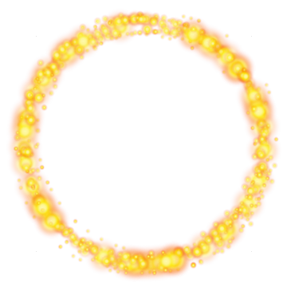

when I receivecreate tunnelsetghosteffect to100go to frontpoint in direction45settime initializerto15.5repeat15create clone ofmyselfturn ↺90degreeschangetime initializerby-0.5when I receiveclear tunnelsethoop position xto0sethoop position yto0sethoop direction xto0sethoop direction yto0settime to reach shiptotime initializersetghosteffect to100showset volume tosound volume%when I receivepaintpaint hoop from shipdefinepaint hoop from camtime to camand shiptime to shipset size to %ifthentime to ship>0setghosteffect toelsesetghosteffect togo to x: y:definepaint hoop from shiptime to shippaint hoop from cam and shiptime to shipdefinepass shiptime to shipifthenandtime to reach ship=front hooptime to ship<0changefront hoopby0.5touch shipifthenandtime to reach ship<front hooptime to ship<-0.2changetime to reach shipby8sethoop position xtotunnel position xsethoop position ytotunnel position ysethoop direction xtotunnel direction xsethoop direction ytotunnel direction ybroadcasttunnel to backand waitgo back0layerscalculate bendwhen I receivepasspass shipdefinecalculate bendifthenandstate>3=1if>then85settunnel bend xto0settunnel bend yto0elsesettunnel bend xtosettunnel bend ytochangetunnel direction xbytunnel bend xchangetunnel direction ybytunnel bend ychangetunnel position xbychangetunnel position ybydefinetouch shipdifference xdifference yifthenstate=4if<then6000play soundpasschangeSCOREby1ifthenHIGH SCORE<SCOREsetHIGH SCOREtoSCOREif=then3changestageby1broadcastenter stagego to frontelseplay soundexplosionsetstateto5broadcastexplode